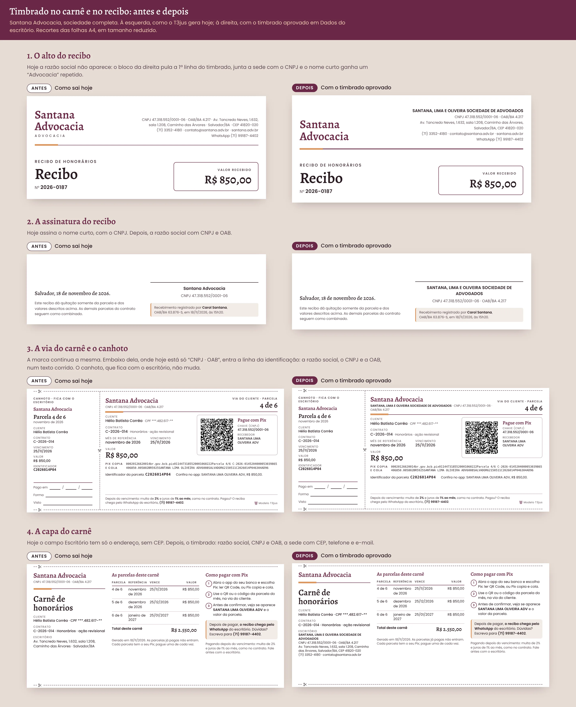
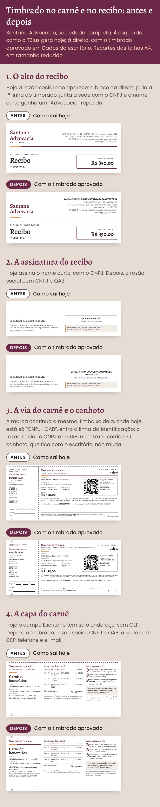

Antes e depois, lado a lado
Recibo: hoje a razão social não aparece, a sede vai junto do CNPJ e o nome curto ganha um “Advocacia” repetido; a assinatura é o nome curto. Carnê: hoje a via tem o nome curto e “CNPJ · OAB”, e a capa tem só o endereço, sem CEP. Depois: a razão social entra em todos esses lugares, e a capa ganha o timbrado inteiro.
Abrir: antes-depois.html